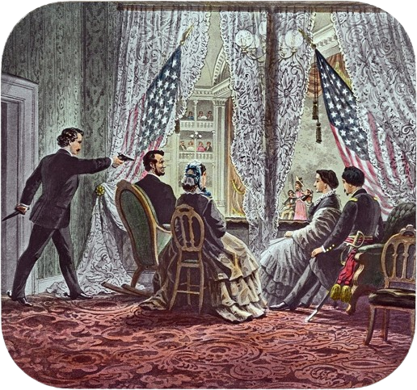
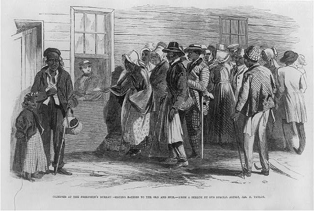

Following the end to the civil war there was a period of time dedicated to rebuilding the Union, this period being refered to as the reconstruction. After the confederacy's defeat Abraham was famously assasinated, and the president to follow would be Andrew Johnson. Andrew Johnson was a southerner therfore his ideas were much different from the radical republicans in office. In the Summer of 1865 many southern stated adopted a set of laws called black codes to make life more difficult for black americans.

Johnson was opposed to any Federal assistance to Southern black people, but despite that the Bureau of Refugees was created by congress in 1865 in order to provide support to former slaves, Johnson called the Bureau "A system for the support of indigent persons in the united states was never contemplated by thte authors of the constitution." In 1867 the First Reconstrruction Act was passed in congress. This act divided the south into five military districts.

November 3rd, 1868 Ulysses S. Grant was elected president, then on March 30th, 1870 the fifteenth ammendment became part of the constitution, preventing states from denying people the right to vote based off their race, color, or prior condition of servitude. Unfortunatly the Reconstruction failed as a result of the weakening of the Radical Republicans. Ulysses S. Grant ended up having a fairly scandelous administration, and a recession played a large part as many Northerners then had their own problems to deal with.